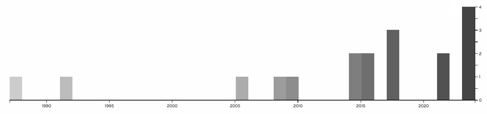

A photo of the shelf referenced for this project. It contains a collection of fictional manga works that was translated to English and rereleased into the west. I was drawn to it due to the fact it contained "Akira" by Katsuhiro Otomo. Please check it out after this. I know you saw that one scene out of context.
For this project, we were tasked with finding a physical shelf within the library of Penn State Behrend that contained a topic to research. We then found these books to archive by using Zotero to capture the web archives of these titles from the Penn State Libraries website. Then we found some more books from the a similar shelf code within other libraries. Finally we exported the raw data to Palladio and analyzed the now visualized data it returned.
I chose the topic of fictional manga works due to my fasination with the country of Japan and its culture/entertainment. I set out a goal to collect what was archived and learn more about it.
From what can be gathered from this exported timeline and the raw data, the works that were found ranged from the late 1980s to as recent as 2023. The majority of works were published between the late 2000s to the late 2010s.
Zotero Group .CSV File